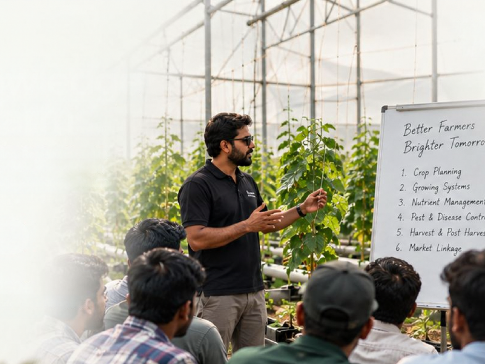

01
01
Three Growing Systems.
Multiple Possibilities.
Choose the right growing system based on your crop, location and business goals.
-
01
-
 02
02
-

03
A Wide Range
of Crops.
From leafy greens to high-value vegetables, our growing systems support diverse crops for different market needs.
Leafy Greens
Fast-growing, nutrient-rich and widely demanded crops that perform exceptionally well in protected environments.
-
Short
growth cycle -
Efficient
resource use -
High
market demand
 Lettuce
Lettuce Spinach
Spinach- Kale
 Swiss Chard
Swiss Chard Rocket
Rocket
Herbs
Aromatic, high-value crops with steady demand from kitchens, retail and processing.
-
Quick
harvest cycles -
Premium
pricing -
Year-round
supply
- Basil
- Mint
- Coriander
- Parsley
- Oregano
Fruiting Vegetables
High-yield crops that give long harvest periods and strong returns under controlled conditions.
-
High
yield potential -
Long
harvest period -
Strong
market value
 Tomato
Tomato- Cucumber
 Capsicum
Capsicum- Cherry Tomato
- Zucchini
Indian Vegetables
Everyday favourites with reliable local demand, grown with better quality and consistency.
-
Reliable
local demand -
Efficient
water use -
Consistent
quality
 Okra
Okra Brinjal
Brinjal- Green Chilli
- Cluster Beans
- Cauliflower
Melons & Gourds
Vining crops that use vertical space well and deliver premium fruit quality.
-
Better
space use -
Sweeter
fruit quality -
Premium
market price
- Muskmelon
- Watermelon
- Bottle Gourd
- Bitter Gourd
- Ridge Gourd
Other Crops
Niche and specialty crops that open new markets and higher margins for protected cultivation.
-
Niche
market access -
Higher
margins -
Custom
crop planning
 Strawberry
Strawberry- Gerbera
- Microgreens
- Medicinal Herbs
- Exotic Vegetables